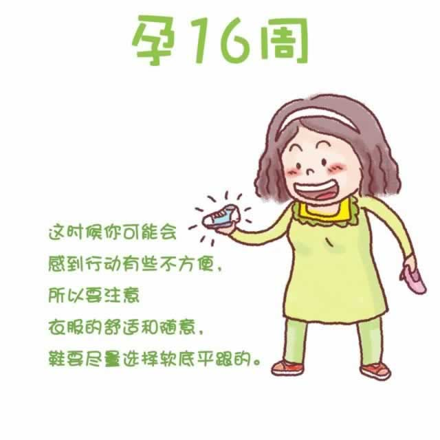

 现在，你的体重仍在持续增加，身体的重心随着子宫的不断增大而发生着变化，你开始感觉到有些行动不便或脚下不稳。此时，穿着合适尺寸的软底平跟鞋会比较舒适和安全。 你的乳房更加敏感和柔软。腹部一侧有时会出现轻微的触痛感，那是因为子宫迅速增加，子宫两边的韧带和骨盆也在生长变化以适应胎儿成长所造成的，属于正常反应。但如果这种疼痛持续多日，则需要找医生咨询。 不少准妈妈在这个阶段还经常会感觉眼睛发干，发痒。遇到此类情况，可以在医生的指导下少量使用不含氯霉素成分的滴眼液。